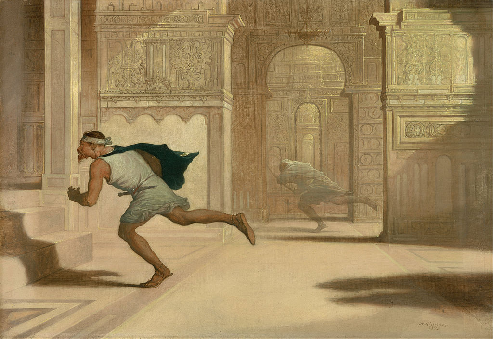

<head>
<meta charset="UTF-8" />
<meta name="keywords" content="drawing, painting" />
<meta name="description" content="drawings by Sunjy" />
<title>Sunjy</title>
<link rel="shortcut icon" type="image/x-icon" href="../../mImages/mCommon/favicon.ico" media="screen" />
<link rel="stylesheet" type="text/css" href="../../mCsses/mCommon/mCssA.css" />
<link rel="stylesheet" type="text/css" href="../../mCsses/mCommon/mCssB.css" />
<link rel="stylesheet" type="text/css" href="../../mCsses/mCommon/mCssC.css" />
<link rel="stylesheet" type="text/css" href="../../mCsses/mCommon/mCssD.css" />
<link rel="stylesheet" type="text/css" href="../../mCsses/mContent/mCssA.css" />
<link rel="stylesheet" type="text/css" href="../../mCsses/mContent/mCssB.css" />
<link rel="stylesheet" type="text/css" href="../../mCsses/mContent/mCssC.css" />
<link rel="stylesheet" type="text/css" href="../../mCsses/mContent/mCssD.css" />
</head>
<script type="text/javascript" src="../../mScripts/mContent/mContentAA.js" /></script>
<script type="text/javascript" src="../../mScripts/mContent/mContentAB.js" /></script>
<script type="text/javascript" src="../../mScripts/mContent/mContentAC.js" /></script>
<script type="text/javascript" src="../../mScripts/mContent/mContentAD.js" /></script>
<script type="text/javascript"></script> 
<script type="text/javascript">
document.write('<div class="mImgAbsolute"></div>');
/*
document.write('<p class="mFontSizeBColor" />From a white paper...</p>');
document.write('<table class="center"><tr><td>');
document.write('');
document.write('</td></tr></table>');
*/
</script>


<script type="text/javascript">
document.write('<p class="mFontSizeBColor" />Flight and Pursuit</p>');
document.write('<p class="mFontSizeSColor" />“Flight and Pursuit” by William Rimmer is set in a mysterious Near Eastern palace depicting a man racing toward a significant set of steps. The man has a red beard and mustache with a large earring. He is dressed simply in a green cloak over his white tunic and a short blade in his thin belt.<br><br>Behind the runner are shadows of other people, perhaps following the runner in pursuit. In a parallel hallway, a ghostly third man in white who is holding a sword. He is running alongside and glances toward the central figure.<br><br>Which of the men is fleeing and which is in pursuit is left to the viewer’s imagination. However, a separate draft drawing of the central figure has an inscribed with the words:<br><br>“Oh, for the Horns of the Altar.” <br><br>This phrase is from the Old Testament. It implies that one of the figures is rushing toward an altar of sanctuary. Accused criminals were untouchable while they remained within the sacred space of an altar of sanctuary.<br><br>Rimmer drew many of his artistic subjects from the Bible and ancient history. The works of the poet and painter William Blake, whose books and watercolors were collected in Boston during this period, may have been an inspiration for this theme.<br><br>This enigmatic painting has been interpreted as a man fleeing his conscience. It has also has been speculated that it illustrates a biblical episode in which King David sent executioners after conspirators plotting against him.<br><br>Sanctuary<br><br>A sanctuary, in its original meaning, is a sacred place, with a shrine or altar. The concept itself has been part of many human cultures for thousands of years.<br><br>The terminology that applies the word “sanctuary” to the area around the altar goes back to King Solomon’s temple, built in about 950 BC, which had a sanctuary.<br><br>The “Holy of Holies” is where the Ark of the Covenant was kept, and the term was applied to any part of a house of worship.<br><br>The idea that persecuted persons should be given a place of refuge is ancient. Anthropologists have found the idea of “a sanctuary” to be a highly universal notion, one which appears in almost all major religious traditions.<br><br>“Cities of refuge” as described by the Books of Numbers and Deuteronomy in the Old Testament, as well as the Bedouin idea of “taking of refuge,” which indicates a strong tradition of sanctuary in the Middle East and Northern Africa.<br><br>Horns of the Altar<br><br>Altars in the Hebrew Bible were first made of earth or simple stone. The first altar in the Hebrew Bible was erected by Noah. Altars were later erected by Abraham, by Isaac, by Jacob, and by Moses.<br><br>Following God’s instructions at Mount Sinai, a new type of Alter was constructed as described in Exodus with four corner projections, called “horns.”<br><br>On top of the altar at its four corners, there were small protrusions or “horns,” in this form, the altar remained until the destruction of Jerusalem by the Romans in 70 CE.<br></p>');
document.write('<table class="center" /><tr><td>');
document.write('<br>Behind the runner are shadows of other people, perhaps following the runner in pursuit. In a parallel hallway, a ghostly third man in white who is holding a sword. He is running alongside and glances toward the central figure.<br><br>Which of the men is fleeing and which is in pursuit is left to the viewer’s imagination. However, a separate draft drawing of the central figure has an inscribed with the words:<br><br>“Oh, for the Horns of the Altar.” <br><br>This phrase is from the Old Testament. It implies that one of the figures is rushing toward an altar of sanctuary. Accused criminals were untouchable while they remained within the sacred space of an altar of sanctuary.<br><br>Rimmer drew many of his artistic subjects from the Bible and ancient history. The works of the poet and painter William Blake, whose books and watercolors were collected in Boston during this period, may have been an inspiration for this theme.<br><br>This enigmatic painting has been interpreted as a man fleeing his conscience. It has also has been speculated that it illustrates a biblical episode in which King David sent executioners after conspirators plotting against him.<br><br>Sanctuary<br><br>A sanctuary, in its original meaning, is a sacred place, with a shrine or altar. The concept itself has been part of many human cultures for thousands of years.<br><br>The terminology that applies the word “sanctuary” to the area around the altar goes back to King Solomon’s temple, built in about 950 BC, which had a sanctuary.<br><br>The “Holy of Holies” is where the Ark of the Covenant was kept, and the term was applied to any part of a house of worship.<br><br>The idea that persecuted persons should be given a place of refuge is ancient. Anthropologists have found the idea of “a sanctuary” to be a highly universal notion, one which appears in almost all major religious traditions.<br><br>“Cities of refuge” as described by the Books of Numbers and Deuteronomy in the Old Testament, as well as the Bedouin idea of “taking of refuge,” which indicates a strong tradition of sanctuary in the Middle East and Northern Africa.<br><br>Horns of the Altar<br><br>Altars in the Hebrew Bible were first made of earth or simple stone. The first altar in the Hebrew Bible was erected by Noah. Altars were later erected by Abraham, by Isaac, by Jacob, and by Moses.<br><br>Following God’s instructions at Mount Sinai, a new type of Alter was constructed as described in Exodus with four corner projections, called “horns.”<br><br>On top of the altar at its four corners, there were small protrusions or “horns,” in this form, the altar remained until the destruction of Jerusalem by the Romans in 70 CE.<br>" />');
document.write('</td></tr></table>');
</script>


